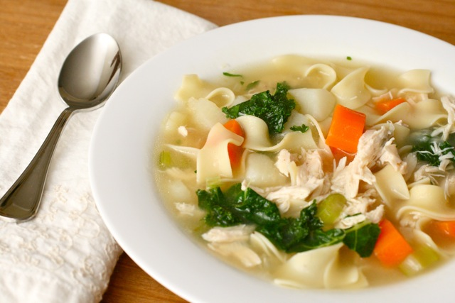

Chicken Noodle Soup

Description
This chicken noodle soup recipe can be on the table in just 40 minutes!
Wheter you're feeling under the weatehr or you're just in need of a little comfort,
this comforting soup will warm you up from the inside out.
Ingredients
Onions and Celery: In the first step of this chicken noodle soup recipe,
diced onions and chopped cleery are cooked in butter until they're aormatic and tender.
Broth: This chicken noodle soup recipe calls for a mixture of chicken and
vegetable broths. If you're short on time or ingredients, you can just use one or the other.
Chicken: Of course, you'll need chicken. If you have leftover rotisserie chicken,
you can use that in place of the cooked chicken breasts for a budget-friendly shortcut.
Noodles: Make sure you don"t add the noodles too early, as cooking
them too long will make them mushy.
Carrots: Carrots, which add a pop of bright color and flavor, are added at the
end of the cooking so they stay crisp. You can add them to the sauteed vegetables at
the beginning if you like your carrots tender.
Basil and Oregano: Dried basil and oregano lend warm, earthy flavor to this
chicken noodle soup recipe.
Steps
- Melt butter in a large pot over medium heat. Add onion and celery and
cook until just tender, about 5 minutes.
- Add chicken broth, vegetable broth, chicken, egg noodles, carrots, basil,
oregano, salt, and pepper. Stir to combine and bring to a boil.
- Reduce heat and simmer for 20 minutes.
Home